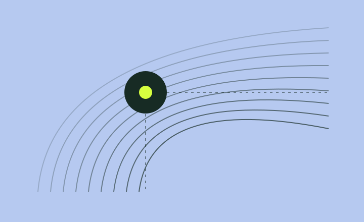
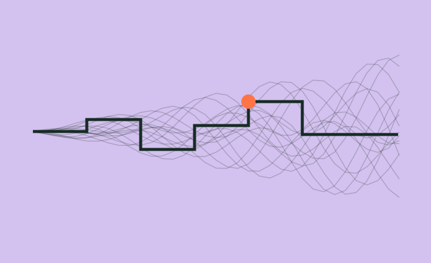
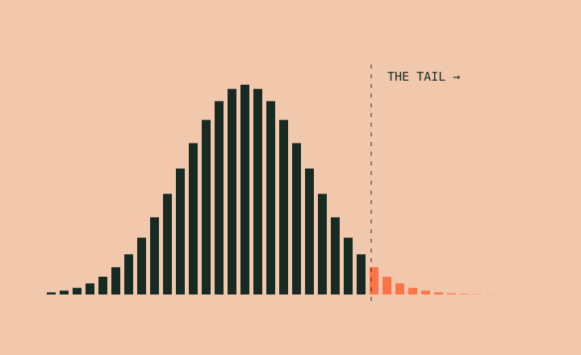
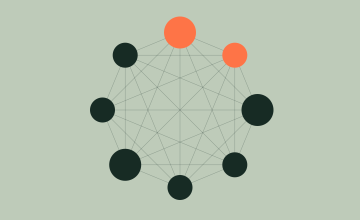
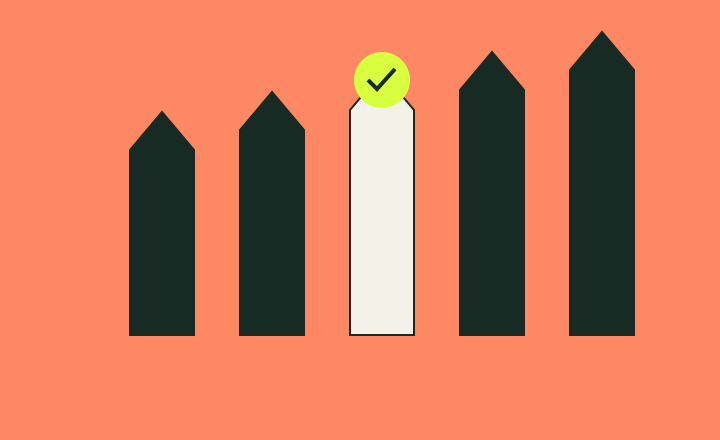

4 of 15 outcomes changed.
The preprint reweights observed votes by square root. It holds behaviour fixed; it does not predict what voters would do under new rules.
Read the original SSRN preprint ↗Projects by Sharvina Srivastava · Algorithms, markets & governance
SHARVINA SRIVASTAVA / THE 60-SECOND PATH
I study how rules distribute access and influence, from DAO votes to India’s admissions counselling.
The preprint reweights observed votes by square root. It holds behaviour fixed; it does not predict what voters would do under new rules.
Read the original SSRN preprint ↗Early Freeze forfeited an upgrade for one selected synthetic applicant. Repeated withdrawal scenarios make this a conditional finding, not a student-wide regret rate.
Inspect every paired result ↗A displacement could update a program’s list without updating the winner’s own state. A regression test now checks both records and the displaced applicant.
Open the regression test ↗TWO FLAGSHIP PROJECTS / GOVERNANCE + ALLOCATION
Two projects about allocation and influence. The findings below are bounded by the data and assumptions behind them.
01 / SSRN WORKING PAPER & COMPUTATIONAL PIPELINE
Sharvina’s work: researched and wrote the SSRN preprint and pursued the subsequent Sybil study. Original pipeline ↗ · Contribution record ↗
Square-root reweighting changed the winning choice in 4 of 15 sampled Arbitrum proposals (26.7%).
Data & limitations · Reported in the SSRN preprint; selected high-turnout proposals, not all DAO decisions. Reweighting holds observed votes fixed. The Sybil preview below is a separate analytical model.
Stack Python · NumPy · pandas · Matplotlib · requests · Snapshot GraphQL
Scope Paper: ~850,000 Snapshot vote records / 15 proposals. Repo includes pagination and reconstruction checks; complete raw ballots are not archived.
At nine equal wallets and an opposing gap of 2W, the added weight is exactly 2W: a tie. A strict reversal first occurs at ten wallets. The implementation checks both the boundary and the integer immediately below it.
(√k − 1)W > G
Read the strict-boundary checks ↗. Four published W/G summaries imply minimum equal-split counts of 4, 25, 230 and 894 wallets. These are analytical thresholds from summaries, not observed exploits. The collector still needs robust handling of equal-timestamp page boundaries. Complete raw ballots are not archived here; this preview checks the analytical calculation, not an observed attack.
02 / ALLOCATION MECHANISMS
Sharvina’s work: framed the counselling-fairness question and developed the original matching, quota and multi-round audit project. Contribution record ↗
Early Freeze cost the selected applicant one preference tier in 50/50 paired trials.
Data & limitations · Single-round applicant DSIC is established theory. This project studies implementation and multi-round decisions using synthetic preferences.
Stack Python standard library · pytest · JavaScript ES modules · SVG · GitHub Pages
A later, higher-priority applicant could win a seat in the program list while their own current_match stayed empty. The repair updates both sides of the assignment.
assert allocation["P"] == ["higher"]
assert higher.current_match == "P"
assert lower.current_match is NoneRead the displacement regression ↗
Performance boundary: program-side sorting and a list queue make this an inspectable small-market implementation. The timing is for this synthetic workload, not a national-scale or browser benchmark.
Interface hypothesis: preview which upgrades Freeze rules out before asking an applicant to commit. This requires user testing; it is not a validated policy recommendation.
RESEARCH DEVELOPMENT / WHAT CHANGED + WHAT IS VERIFIED
Sharvina’s initial line of inquiry was quadratic voting. The preprint compared outcomes with observed votes held fixed. In editorial feedback on a rejected submission, an editor questioned the novelty of changed outcomes and noted that capital concentration could respond to new voting rules.
That objection prompted the Sybil follow-up: what happens when one balance is split among identities? The equal-split model isolates one response; it still does not model endogenous concentration or actual voter behaviour.
Follow the analytical extension ↗Living in India amid the JEE admissions race made Sharvina curious about counselling fairness. The project connects matching theory to explicit quota rules and Freeze, Float and Slide decisions.
The distinction that matters: single-round DSIC is established theory; it does not settle the consequences of an irreversible action when later vacancies appear. The synthetic audit explores that narrower question, without claiming to validate official JoSAA outcomes.
Read method, results & limitations ↗Public: SSRN working paper, source histories, benchmark JSON and automated checks. The hosted technical notes are project documentation.
Author-reported: editorial feedback and rejection, paraphrased here from private correspondence. The correspondence is not published for independent verification; the feedback is not an endorsement.
No independently verified user study, external replication or peer-reviewed acceptance is presented. Internal tests support reproducibility, not external validation.
Inspect internal CI ↗ONE COMPUTATIONAL LABORATORY / SIX ESTABLISHED MODELS
An educational companion to the two research projects: six implementations of established finance and economics models, with synthetic inputs, seeded runs and shared numerical checks. These are not six original research papers.
LAB PREVIEW / MARKET MICROSTRUCTURE
A 1,200-share sweep consumes ten price levels and pays 52.808 bps against the $100 midpoint in the default book.
Data & limitations · Synthetic, static single-venue order book. No cancellations, hidden orders, exchange fees or latency.
Stack JavaScript ES modules · SVG · node:test · GitHub Actions / Pages
Collection Six models, including market microstructure, AMMs, hedging, portfolio tails, bank networks and auctions.
An unfilled market order must not invent a fill or become a resting limit order. The fill ledger preserves the unexecuted remainder; try a 4,000-share order in the preview.
Read the exhaustion and FIFO tests ↗. This implementation sorts an array and removes filled orders from its front; a production exchange would need different data structures and execution constraints.
THE EXPERIMENT COLLECTION / 01—06
Six ways to investigate markets, risk and incentives. Each model includes adjustable assumptions, worked examples, checks and downloadable results.
01 / HOW TRADES BECOME PRICES.
EXPERIMENT 01 / DATA STRUCTURES & MATCHING
Why does a large trade pay more than the price on the screen?
1,200 shares consume ten price levels: VWAP $100.528 and 52.808 bps cost against the $100 midpoint.
Limitations · Static synthetic book; no cancellations, hidden liquidity or latency.
Stack JavaScript ES modules · SVG · node:test · GitHub Pages
Computation 40 resting orders · price/time matching · fill ledger
Fill-by-fill execution, VWAP and the cost of consuming liquidity.
The maths, code & limitations →
EXPERIMENT 02 / NONLINEAR PRICING & INVARIANTS
What does an automated market maker charge for a large trade?
A 1,000 A swap against 5,000 A reserves receives 83,124.896 B after a 0.3% fee. Separately, a doubled external price implies −5.719% LP return relative to holding, before fees.
Limitations · Two-token constant-product model; no arbitrage path, MEV or fee-income forecast.
Stack JavaScript ES modules · SVG · node:test · GitHub Pages
Computation Closed-form reserve accounting · two sampled curves
Swap output, price impact, fee accounting and LP divergence loss.
The maths, code & limitations →02 / WHAT A RISK MEASURE OR A HEDGE CAN LEAVE OUT.

EXPERIMENT 03 / STOCHASTIC SIMULATION
If an option can be replicated, why does a real hedge still lose money?
Even with matched 20% pricing/path volatility, discrete hedging produces $0.934 sample P&L dispersion across 600 paths at weekly rebalancing and 2 bps costs.
Limitations · GBM paths and discrete rebalancing; no volatility surface, jumps or real execution.
Stack JavaScript ES modules · SVG · node:test · GitHub Pages
Computation 600 seeded GBM paths · 52 intervals · self-financing ledger
Replication error, trading costs and volatility misspecification.
The maths, code & limitations →
EXPERIMENT 04 / LINEAR ALGEBRA & STATISTICS
Can two models agree on volatility and disagree on how bad losses get?
Holding analytic volatility at 11.857%, switching Gaussian shocks to standardized t₅ changes worst-5% mean loss from 17.704% to 19.742% in the seeded example.
Limitations · Synthetic stationary returns; tail estimates depend on the assumed distribution.
Stack JavaScript ES modules · SVG · node:test · GitHub Pages
Computation 12,000 return draws · 1,326 grid portfolios · covariance-preserving sampling
Covariance, a grid frontier and losses beyond the 95% quantile.
The maths, code & limitations →
EXPERIMENT 05 / GRAPHS & FIXED POINTS
How can a loss at one bank reach a bank that never held the damaged asset?
In the default eight-bank ring, a 100-unit loss at Bank 1 produces three secondary defaults and 55.702 units of outside-creditor losses.
Limitations · Stylized fixed liabilities and pro-rata clearing; no liquidity runs or fire sales.
Stack JavaScript ES modules · SVG · node:test · GitHub Pages
Computation 8 banks + outside creditor · iterative pro-rata clearing
Payment shortfalls and secondary defaults across three networks.
The maths, code & limitations →03 / HOW THE RULES CHANGE THE WAY PEOPLE BID.

EXPERIMENT 06 / GAME THEORY & PAIRED EXPERIMENTS
Can different payment rules raise the same expected revenue?
With five bidders and no reserve, both formats have $66.67 theoretical expected revenue. The 10,000 paired draws estimate $66.776 versus $66.713.
Limitations · Independent uniform private values and risk-neutral bidders; no collusion or entry costs.
Stack JavaScript ES modules · SVG · node:test · GitHub Pages
Computation 10,000 paired value draws · reserve-aware first-price bids
Equilibrium bids, reserves, sale rates and expected seller revenue.
The maths, code & limitations →THE METHOD / FROM QUESTION TO CODE
Every experiment starts with assumptions. Read them, test a boundary case, and inspect the code before trusting a result.
Read the field guide ↗